Sobre as/os autoras/es
Volume 1
Helena de Medeiros Caseli 📨️

Helena Caseli é formada em Ciência da Computação pela UFU, com pós-graduação no ICMC/USP. É professora titular na UFSCar, onde atua desde 2008 e coordena o LALIC (Laboratório de Linguística e Inteligência Computacional). Suas áreas de interesse incluem aprendizado de máquina, tradução automática e PLN aplicado a redes sociais em domínios como política e saúde mental. Foi a idealizadora, é uma das organizadoras deste livro e colaborou com os Capítulos O que é PLN?, Sequência de caracteres e palavras, E agora, PLN?, Tradução Automática e Detecção de Transtornos de Saúde Mental a partir de Texto.
Maria das Graças Volpe Nunes 📨️

Maria das Graças Volpe Nunes é formada em Ciência da Computação pela UFSCar, mestre pela USP e doutora pela PUC-Rio. Foi docente no ICMC-USP, São Carlos, de 1981 a 2013, onde agora é professora sênior. Atualmente é membro do C4AI, da USP, IBM e FAPESP. É uma das fundadoras do NILC, onde atuou em várias áreas do PLN para português: revisão ortográfica e gramatical, tradução automática, sumarização, análise de sentimentos, entre outras. É uma das organizadoras deste livro e colaborou com os Capítulos O que é PLN?, Questões éticas em IA e PLN e E agora, PLN?.
Adriana Silvina Pagano 📨️

Adriana Pagano é formada em Letras pela Universidad Nacional de La Plata. Fez seu mestrado no Programa de Inglês e Literatura Correspondente da UFSC e seu doutorado no Programa de Estudos Linguísticos da UFMG. É professora titular da Faculdade de Letras da UFMG desde 1995. Suas áreas de interesse incluem tradução, produção textual multilíngue e modelagem sistêmico-funcional da linguagem. Neste livro, colaborou com os Capítulos O que é PLN?, A ordem e a função das palavras em uma sentença, Ferramentas e recursos para o processamento sintático e PLN na Saúde.
Aline Aver Vanin 📨️

Aline Aver Vanin é licenciada em Letras pela UCS, com mestrado e doutorado em Linguística pela PUCRS. Atuou em estágio pós-doutoral no Laboratório de PLN do Programa de Pós-Graduação em Computação da PUCRS. É docente do Departamento de Educação e Humanidades da UFCSPA desde 2014 e colaboradora do Programa de Pós-Graduação em Letras da UNISC desde 2019. Tem interesse na interface discurso e PLN. Neste livro, colaborou com o Capítulo Resolução de correferência.
Aline Villavicencio 📨️

Aline Villavicencio é formada em Ciência da Computação pela PUC-RS e doutora pela Universidade de Cambridge (Inglaterra). É professora titular da Universidade de Exeter (Inglaterra) onde é diretora do Institute of Data Science and Artificial Intelligence. Sua pesquisa é em Processamento de Linguagem Natural (PLN) inspirado em modelos cognitivo computacionais de processamento de linguagem e com foco em processamento de expressões multipalavras. Neste livro, colaborou com o Capítulo Expressões multipalavras.
Amanda Pontes Rassi 📨️

Amanda Rassi é bacharel e mestre em Linguística pela Universidade Federal de Goiás (UFG) e doutora na mesma área pela Universidade Federal de São Carlos (UFSCar). Tem experiência com correção automática de redações, tendo atuado na Redação Nota 1000 e atualmente na Somos Educação. Suas áreas de interesse incluem sintaxe, semântica, lexicologia, lexicografia e PLN. Neste livro, colaborou com os Capítulos Sequência de caracteres e palavras, A ordem e a função das palavras em uma sentença e Correção Automática de Redação.
Ana Clara Souza Pagano 📨️

Ana Clara Souza Pagano é formada em Linguística Teórica e Descritiva pela Universidade Federal de Minas Gerais (UFMG). Fez seu Trabalho de Conclusão de Curso em Estilometria computacional. Suas áreas de interesse incluem: Aprendizado de Máquina (AM), Inteligência Artificial (IA), tradução e Processamento de Linguagem Natural (PLN). Neste livro, colaborou com os Capítulos A ordem e a função das palavras em uma sentença e Ferramentas e recursos para o processamento sintático.
Arnaldo Candido Junior 📨️
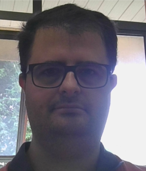
Arnaldo Candido Junior possui graduação em Ciência da Computação pela Universidade Estadual Paulista Júlio de Mesquita Filho (2005), mestrado em Ciências da Computação e Matemática Computacional pelo Instituto de Ciências Matemáticas e de Computação (ICMC) da Universidade de São Paulo (USP) (2008) e doutorado em Ciências da Computação e Matemática Computacional também pelo ICMC/USP. É professor da Universidade Estadual Paulista. Atua nas áreas de linguagens de programação e inteligência artificial (PLN e processamento da fala). Neste livro, colaborou com o Capítulo Recursos para o processamento de fala.
Brielen Madureira 📨️

Brielen Madureira é formada em Matemática Aplicada e Computacional pela Universidade de São Paulo (USP). Tem mestrado em Ciência e Tecnologia da Linguagem pela Universidade de Saarland (Alemanha) e doutorado em Linguística Computacional pela Universidade de Potsdam (Alemanha), onde participou do grupo de pesquisa em Diálogo. Mais amplamente, tem interesse na avaliação de tecnologias de linguagem e nas urgentes considerações éticas que elas demandam. Atualmente é pesquisadora em fase de pós-doutorado na Universidade de Leipzig (Alemanha), no grupo Climate Discourse. Neste livro, colaborou com os Capítulos Avaliação de tecnologias de linguagem, Diálogo e Interatividade e Responsabilidade no desenvolvimento e uso de tecnologias de linguagem baseadas em IA.
Camila de Araújo Azevedo 📨️
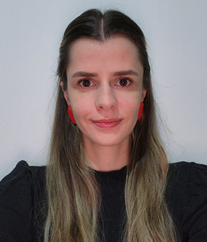
Camila Azevedo foi aluna da primeira turma do Bacharelado em Linguística da Universidade Federal de São Carlos (UFSCar), atua há mais de 10 anos com síntese de voz e atualmente trabalha no time de processamento de fala do SiDi. Neste livro, colaborou com o Capítulo Texto ou fala?.
Carlos Ramisch 📨️
Carlos Ramisch é formado em ciência da computação pela Universidade Federal do Rio Grande do Sul (UFRGS) e concluiu o doutorado em 2012, em co-tutela entre a UFRGS e a Université de Grenoble (França). Desde 2013, ele é professor na Universidade de Aix-Marseille e pesquisador afiliado ao Laboratoire d’Informatique et Systèmes, na França. Sua pesquisa é focada na área de semântica computacional, em especial no processamento de expressões multipalavras. Neste livro, colaborou com o Capítulo Expressões multipalavras.
Cláudia Freitas 📨️

Cláudia Freitas é formada em Letras pela PUC-Rio, onde concluiu o doutorado em Estudos da Linguagem (2007) sobre a construção de ontologias a partir de corpus. De 2012 a 2022 foi docente do Programa de Pós-Graduação em Estudos da Linguagem da PUC-Rio, onde fundou o grupo ComCorHD (Linguística Computacional, Corpus e Humanidades Digitais). De 2007 a 2022 foi também pesquisadora da Linguateca. Ao longo de 2023 e 2024 foi pesquisadora do ICMC/USP, vinculada ao C4AI, e atualmente é pesquisadora independente. Suas áreas de interesse incluem construção e avaliação de datasets/corpora, semântica/significado, e articulação entre abordagens simbólicas e neurais. Neste livro, colaborou com os Capítulos E o significado?, Conjunto de dados, dataset e corpus, Avaliação conjunta em português e ChatGPT, MariTalk e outros agentes de conversação.
Daniela Barreiro Claro 📨️

Daniela Barreiro Claro é professora titular da Universidade Federal da Bahia (UFBA), fez seu Mestrado em Ciências da Computação pela Universidade Federal de Santa Catarina (UFSC) e o seu Doutorado na Université d’Angers (França). Em 2009, ela fundou o Grupo de Pesquisa FORMAS na área de Semântica e PLN. Suas principais áreas de pesquisa incluem extração de informação, aprendizado de máquina e aprendizado multimodal. Neste livro, colaborou com os Capítulos Representação vetorial e semântica distribucional e Extração de Informação.
Dante Augusto Barone 📨️

Dante Augusto Barone é doutor em Ciência da Computação pelo Instituto Nacional Politécnico de Grenoble(INPG), França e tem mestrado e graduação em Engenharia Elétrica, pela USP e pela UFRGS, respectivamente. Atualmente coordena o Programa de Pós-Graduação em Informática na Educação da UFRGS. Suas áreas de interesse incluem Aprendizado de Máquina, Processamento de Linguagem Natural e Ética em Inteligência Artificial. Contribuiu e liderou projeto de cooperação com a Petrobrás para o desenvolvimento de robô, o qual recebeu o prêmio de inovação em 2021. Neste livro, colaborou com o Capítulo Perguntas e Respostas.
Diana Santos 📨️

Diana Santos é formada em Engenharia Eletrotécnica e de Computadores em 1985, com mestrado na mesma área com tese em tradução automática em 1988, e doutorada em Engenharia Informática em 1996 com uma tese em semântica computacional, todos pelo Instituto Superior Técnico, Lisboa. Desde 1998 que trabalha para o processamento computacional da língua portuguesa no mundo, sendo líder da Linguateca desde 2000. Desde 2011 que é professora na Universidade de Oslo em Linguística Portuguesa, e também leciona ou lecionou Tradução, Estatística, e Humanidades Digitais. Os seus interesses são quase todas as áreas do PLN, e avaliação em geral. Neste livro, colaborou com o Capítulo Avaliação conjunta em português.
Edresson Casanova 📨️

Edresson Casanova é bacharel em Ciência da Computação pela UTFPR, com pós-graduação em inteligência artificial e PLN com foco em processamento de fala no ICMC/USP. Atualmente, é Deep Learning engineer na coqui.ai. Suas áreas de interesse incluem síntese de fala, clonagem de voz, verificação de locutores e reconhecimento automático de fala. Neste livro, colaborou com o Capítulo Recursos para o processamento de fala.
Eduardo Cortes 📨️

Eduardo Cortes é doutor em Ciência da Computação pela Universidade Federal do Rio Grande do Sul (UFRGS), com experiência na área de Inteligência Artificial, com ênfase em Sistemas de Question Answering, Processamento de Linguagem Natural (PLN) e Aprendizado de Máquina (AM). Atualmente, atua como pesquisador em um projeto conjunto entre a Unisinos e a SAP, focado em PLN. Neste livro, colaborou com o Capítulo Perguntas e Respostas.
Elisa Terumi Rubel Schneider 📨️
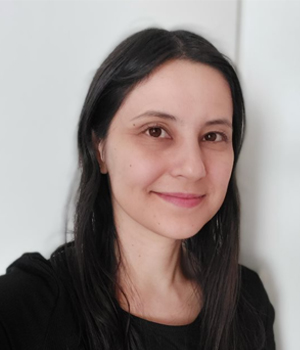
Elisa Terumi é formada em Informática pela Universidade Tecnológica Federal do Paraná (UTFPR), com especialização em Desenvolvimento Web (PUCPR), mestrado em Bioinformática (UFPR) e doutorado em Informática atuando na linha de pesquisa de Inteligência Artificial (PUCPR). Tem interesse em PLN aplicado na área de saúde. Neste livro, colaborou com os Capítulos Ferramentas e recursos para o processamento sintático e PLN na Saúde.
Eloize Rossi Marques Seno 📨️

Eloize Seno é Bacharel em Análise e Desenvolvimento de Sistemas pela UNILINS, com mestrado em inteligência artificial e PLN pelo Programa de Pós-graduação em Ciência da Computação da UFSCar e doutorado em inteligência artificial e PLN pelo ICMC/USP. É docente no Instituto Federal de São Paulo desde 2011. Suas áreas de interesse incluem sumarização automática, tradução automática, análise semântica e mineração de opinião. Neste livro, colaborou com os Capítulos Semântica com técnicas simbólicas e Representação vetorial e semântica distribucional.
Evandro Fonseca 📨️

Evandro Fonseca possui graduação em Ciência da Computação (2011) pela Universidade Católica de Pelotas (UCPEL), mestrado (2014) e doutorado (2018) em Ciência da Computação, com foco em PLN, pela Pontifícia Universidade Católica do Rio Grande do Sul (PUCRS). Atualmente atua como Team Lead | AI/NLP Specialist na Blip. Neste livro, colaborou com o Capítulo Resolução de correferência.
Flaviane Romani Fernandes Svartman 📨️
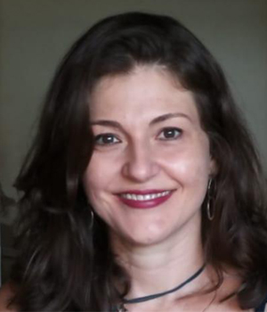
Flaviane Svartman possui graduação e doutorado em Linguística pela Unicamp, com período de estágio de doutorado na Faculdade de Letras da Universidade de Lisboa e pós-doutorado também pela Unicamp. Atua como docente na área de Filologia e Língua Portuguesa na Faculdade de Filosofia, Letras e Ciências Humanas da USP desde 2010. Suas investigações concernem ao estudo da fonologia e da fonética da língua portuguesa, com especial interesse na prosódia, na interface sintaxe-fonologia, na comparação entre variedades africanas, brasileiras e europeias do português e no PLN. Neste livro, colaborou com os Capítulos Recursos para o processamento de fala e Classificação de Áudio aplicada à Saúde.
Heliana Mello 📨️
Heliana Mello é formada em Letras pela Universidade Federal de Minas Gerais (UFMG), com doutorado em Linguística pela CUNY. É docente na UFMG desde 1998. Suas áreas de interesse incluem métodos empíricos e quantitativos para a análise da linguagem, compilação e estudo de corpora de fala. Neste livro, colaborou com o Capítulo Texto ou fala?.
Ivandré Paraboni 📨️
Ivandré Paraboni é doutor em Ciência da Computação pela University of Brighton (Inglaterra, 2003), com estágio de pós-doutorado junto à University of Aberdeen (Escócia, 2012). É professor associado (livre docente) e pesquisador da USP/EACH. Possui experiência na área de Ciência da Computação, atuando principalmente nas áreas de PLN e IA. Interesses de pesquisa abrangem o processamento da língua humana em um sentido amplo do termo, incluindo métodos computacionais derivados das Ciências Cognitivas e aplicações práticas de classificação de documentos extraídos da WEB. Neste livro, colaborou com os Capítulos Geração de linguagem natural e Detecção de Transtornos de Saúde Mental a partir de Texto.
Jackson Wilke da Cruz Souza 📨️
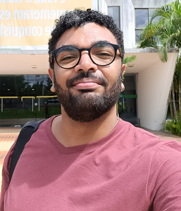
Jackson Souza é bacharel (2012), mestre (2015) e doutor (2019) em Linguística pela Universidade Federal de São Carlos (UFSCar). Atualmente, é professor da Universidade Federal da Bahia (UFBA), atuando junto ao Departamento de Ciência, Tecnologia e Inovação e ao Programa de Pós-Graduação em Língua e Cultura da UFBA. Tem interesse nas áreas de análise de discurso, sumarização automática e análise e descrição linguística. Neste livro, colaborou com os Capítulos Modelos discursivos e Sumarização Automática.
Laila Mota 📨️

Laila Mota é formada em Ciência e Tecnologia pela Universidade Federal da Bahia (UFBA), com pós-graduação em Tecnologia da Informação pela UFBA. Suas áreas de interesse incluem aprendizado de máquina, linguística computacional e modelos de linguagem. Neste livro, colaborou com o Capítulo Representação vetorial e semântica distribucional.
Lucelene Lopes 📨️

Lucelene Lopes é doutora em Ciência da Computação pela PUCRS (2012). Consultora Empresarial na área de Processamento de Linguagem Natural (PLN) desde 2016, e desde 2021 é pesquisadora no ICMC/USP, vinculada ao C4AI. Suas áreas de interesses incluem PLN, aprendizado de máquina, parsing e modelos de linguagem. Neste livro, colaborou com os Capítulos Sequência de caracteres e palavras e Ferramentas e recursos para o processamento sintático.
Maria José Bocorny Finatto 📨️
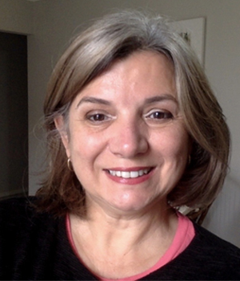
Maria José Bocorny Finatto é linguista especializada em Estudos do Léxico e Terminologia. Investiga a história das terminologias médicas e modos de aplicar técnicas da Linguagem Simples para maior acessibilidade das informações escritas para diferentes perfis de pessoas no Brasil. Análise textual com recursos PLN é seu foco. Orientadora de mestrado e doutorado junto à Universidade Federal do Rio Grande do Sul (UFRGS). Neste livro, colaborou com os Capítulos Sequência de caracteres e palavras, PLN no Direito e PLN e Humanidades Digitais.
Mariza Ferro 📨️
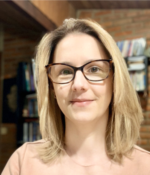
Mariza Ferro é formada em Ciência da Computação pela UNIOESTE, com mestrado em Inteligência Artificial no ICMC/USP e doutorado em Modelagem Computacional pelo LNCC. É docente do Instituto de Computação da Universidade Federal Fluminense (UFF) e coordenadora do Núcleo de Referência em IA Ética e Confiável desde 2020. Suas áreas de interesse incluem IA ética, IA verde e sustentável, IA para o estar social e aprendizado de máquina para predição de eventos extremos. Neste livro, colaborou com o Capítulo Questões éticas em IA e PLN.
Marli Quadros Leite 📨️
Marli Quadros Leite é Professora Titular do Departamento de Letras Clássicas e Vernáculas (FFLCH | USP) e atua como pesquisadora nas áreas de análise do Discurso Oral e na de História das Ideias Linguísticas. Atualmente é Pró-Reitora de Cultura e Extensão Universitária da USP. Neste livro, colaborou com o Capítulo Recursos para o processamento de fala.
Nataly Leopoldina Patti da Silva 📨️

Nataly Patti é bacharel e mestre em Sistemas de Informação pela Universidade de São Paulo (USP), onde desenvolveu pesquisas em PLN com foco em Aprendizado Transdutivo e classificação de Atos de Fala. Atualmente, é aluna especial de doutorado na USP e atua como Cientista de Dados no Instituto de Pesquisas SiDi, contribuindo com projetos de PLN, especialmente no Samsung Search e na Bixby. Suas áreas de interesse incluem PLN, aprendizado de máquina e recuperação de informação. Neste livro, colaborou com o Capítulo Aprendizado Transdutivo em PLN.
Norton Trevisan Roman 📨️

Norton Trevisan Roman é Bacharel em Física, com Mestrado e Doutorado em Ciência da Computação com foco em PLN, todos pela Unicamp, possuindo também Livre-Docência pela USP. Docente na EACH-USP desde 2010, suas áreas de interesse incluem Processamento de Língua Natural e aplicações de PLN e IA a diversas tarefas, indo desde o tratamento de emoção e sentimento à predição do mercado financeiro. Neste livro, colaborou com o Capítulo Aprendizado Transdutivo em PLN.
Paula Christina Figueira Cardoso 📨️

Paula Figueira Cardoso tem graduação em Informática pelo ILES de Santarém, mestrado em Engenharia Elétrica pela Universidade Federal do Pará (UFPA) e doutorado pelo Instituto de Ciências Matemáticas e de Computação (ICMC) – USP/São Carlos. Atualmente é docente na UFPA. Suas áreas de interesse incluem geração de textos, sumarização automática, tecnologias educacionais e pesquisas aplicadas na área de interface homem-máquina. Neste livro, colaborou com os Capítulos Modelos discursivos e Sumarização Automática.
Priscila Osório Côrtes 📨️
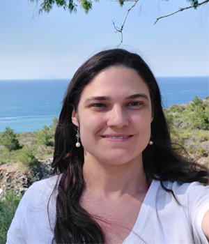
Priscila Osório Côrtes é formada em Letras Alemão/Português pela Universidade Federal de Minas Gerais (UFMG) e mestre em linguística pela Albert Ludwigs-Universität Freiburg, Alemanha. Trabalha há mais de 7 anos na área de Processamento de Linguagem Natural (PLN), e há mais de 5 com processamento de fala na empresa SiDi Campinas. Neste livro, colaborou com o Capítulo Texto ou fala?.
Renata Ramisch 📨️
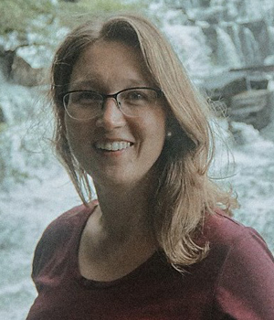
Renata Ramisch é formada em Letras pela Universidade Federal do Rio Grande do Sul (UFRGS) e mestre em Linguística pela Universidade Federal de São Carlos (UFSCar). É linguista na Redação Nota 1000, que faz parte do grupo Somos Educação. Suas áreas de interesse incluem correção automática de redações e tratamento computacional de expressões multipalavras. Neste livro, colaborou com o Capítulo Expressões multipalavras.
Renata Vieira 📨️

Renata Vieira é PhD em Informática e Ciências Cognitivas pela Universidade de Edimburgo, Escócia. É pesquisadora da área de Processamento de Linguagem Natural (PLN) atuando em diversas áreas de aplicação. É investigadora principal convidada do Centro de História, Culturas e Sociedades da Universidade de Évora (Portugal) e conselheira científica do Instituto de Inteligência Artificial na Saúde. Neste livro, colaborou com os Capítulos Resolução de correferência, Perguntas e Respostas, Extração de Informação e PLN e Humanidades Digitais.
Ricardo Marcacini 📨️

Ricardo Marcacini é formado em Informática pela Universidade de São Paulo (USP), com pós-graduação em ciência de computação e matemática computacional no ICMC/USP. Atualmente é docente do Departamento de Ciências de Computação (SCC) do ICMC/USP. Realiza pesquisa na área de aprendizado de máquina, com foco em mineração de textos, análise de eventos e análise de sentimentos. Neste livro, colaborou com o Capítulo Recursos para o processamento de fala.
Roana Rodrigues 📨️
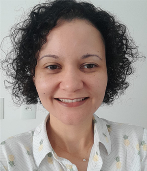
Roana Rodrigues é formada em Letras, mestra e doutora em Linguística pela Universidade Federal de São Carlos (UFSCar). É docente do Departamento de Letras Estrangeiras da Universidade Federal de Sergipe (UFS). Suas áreas de interesse incluem sintaxe, semântica, estudos do léxico e Processamento de Linguagem Natural (PLN). Neste livro, colaborou com o Capítulo Modelos discursivos.
Sandra Maria Aluísio 📨️

Sandra Maria Aluísio é formada em Ciência da Computação pela UFSCar, com Doutorado em IA e PLN, pela USP. Foi docente de 1988 a 2018, no ICMC/USP, onde hoje atua no Programa Professor Sênior. As áreas de interesse incluem linguística de corpus, simplificação textual, recursos semânticos, detecção automática da estrutura do discurso científico e ferramentas de suporte à escrita, análise automática de distúrbios de linguagem, e processamento de fala. Neste livro, colaborou com os Capítulos Recursos para o processamento de fala e Complexidade Textual e suas Tarefas Relacionadas.
Solange Rezende 📨️
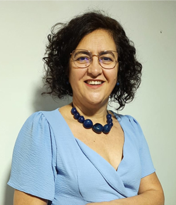
Solange Rezende é docente e pesquisadora no Laboratório de Inteligência Computacional (LABIC) do Departamento de Ciências de Computação do ICMC/USP desde 1991. Tem experiência na área de IA, atuando principalmente nos temas relacionados com mineração de dados e textos, análise de sentimentos e sistemas de recomendação. Possui graduação em licenciatura em Ciências Habilitação em Matemática pela UFU (1986), mestrado em Ciências de Computação e Matemática Computacional pela USP (1990) e doutorado em Engenharia Mecânica – São Carlos pela USP (1993). Realizou pós-doutorado na Universidade de Minnesota, USA (1995-1996). Neste livro, colaborou com o Capítulo Recursos para o processamento de fala.
Tayane Soares 📨️

Tayane Soares é Cientista de Dados na empresa Blip, formada em Letras pela UFMG e mestra em Linguística Aplicada pelo PosLin-UFMG. No mestrado, seu trabalho de pesquisa teve como foco a avaliação de viés de gênero em modelos de tradução automática, especificamente no par linguístico inglês-português. Seu interesse de pesquisa abrange a interseção entre linguagem e tecnologia, incluindo linguística computacional, processamento de língua natural e aprendizado de máquina. Além disso, também se interessa em pesquisar e avaliar como a aplicação dessas técnicas em tecnologias digitais afeta a sociedade e as pessoas que as utilizam. Neste livro, colaborou com o Capítulo Questões éticas em IA e PLN.
Thiago Castro Ferreira 📨️

Thiago Castro Ferreira é Bacharel (2008-2012) e Mestre em Ciências (2012-2014) pelo curso de Sistemas de Informação da Universidade de São Paulo. Com foco em Geração de Língua Natural, possui doutorado pela Universidade de Tilburg (2015-2018), e pós-doutorados também pela Universidade de Tilburg (2018-2019) e Universidade Federal de Minas Gerais (2019-2021). Thiago é atualmente um Cientista Aplicado na aiXplain com interesses em Engenharia de Software, Processamento de Linguagem Natural, Aprendizado de Máquina, Modelos de Linguagem e Agentes. Neste livro, colaborou com o Capítulo Geração de linguagem natural.
Valéria de Paiva 📨️

Valeria de Paiva é formada em Matemática pela PUC-Rio, com pós-graduação em Algebra na PUC e e mestrado/doutorado na Universidade de Cambridge, UK. É pesquisadora principal (Principal Researcher) no Topos Institute desde 2021. Suas áreas de interesse incluem semântica de linguagem natural, inferência em linguagem natural, recursos léxico-semânticos e lógica, especialmente lógica categórica. Gosta de sistemas híbridos de PLN, open software, dependências universais e da OpenWordNet-PT. Fundadora de Women in Logic e Lógicas Brasileiras. Neste livro, colaborou com o Capítulo Semântica com técnicas simbólicas.
Vinícius G. Santos 📨️
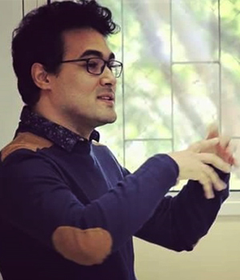
Vinícius G. Santos é graduado, mestre e doutor em Letras pela Universidade de São Paulo. Atualmente realiza pesquisa de pós-doutorado vinculada ao C4AI–USP. Atua na área de descrição e análise linguística de variedades africanas e brasileiras da língua portuguesa, com especial interesse em fonologia, prosódia, entoação e elaboração de recursos para PLN. Neste livro, colaborou com o Capítulo Recursos para o processamento de fala.
Vládia Pinheiro 📨️

Vládia Pinheiro é formada em Ciência da Computação pela Universidade Federal do Ceará (UFC), com doutorado em Ciência da Computação na mesma universidade. É docente do Programa de Pós-Graduação em Informática Aplicada, na UNIFOR, desde 2011. Suas áreas de interesse incluem recursos semânticos, parsers semânticos, extração de informação, sumarização de textos, chatbots, aplicações de inteligência artificial e ciência de dados. Neste livro, colaborou com o Capítulo Semântica com técnicas simbólicas.